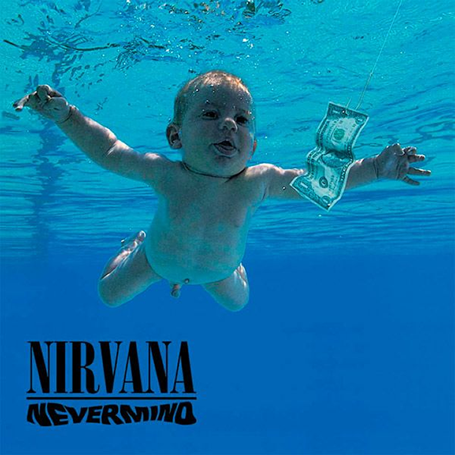

|
Video Original |
Letra
Polly wants a cracker
I think I should get off her firstbr I think she wants some water
To put out the blow torch
Isn't me, have a seed
Let me clip your dirty wings
Let me take a ride, cut yourself
Want some help, please myself
Got some rope, haven't told
Promise you, have been true
Let me take a ride, cut yourself
Want some help, please myself
Polly wants a cracker
Maybe she would like some food
She asked me to untie her
A chase would be nice for a few
Isn't me, have a seed
Let me clip your dirty wings
Let me take a ride, cut yourself
Want some help, please myself
Got some rope, haven't told
Promise you, have been true
Let me take a ride, cut yourself
Want some help, please myself
Polly said
Polly says her back hurts
She's just as bored as me
She caught me off my guard
Amazes me the will of instinct
Isn't me, have a seed
Let me clip your dirty wings
Let me take a ride, cut yourself Want some help, please myself
Got some rope, haven't told
Promise you, have been true
Let me take a ride, cut yourself
Want some help, please myself.
Album
